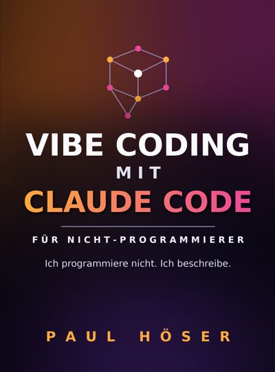

Vibe Coding mit Claude Code für Nicht-Programmierer
Ich programmiere nicht. Ich beschreibe.
Mein Weg vom Marketing-Manager zum Builder: wie man mit einem KI-Agenten eigene Werkzeuge baut, ohne eine Zeile Code. Sechs echte Projekte mit allen Umwegen, 50 Vorlagen zum Kopieren und ein ehrlicher Vergleich mit Codex, Cursor und Antigravity. Das Hörbuch spricht mein Stimmklon.
Hörprobe · gesprochen von meinem KI-Stimmklon